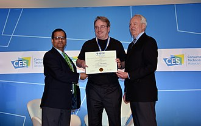

Biography
Linus Benedict Torvalds
In 2012, he was awarded the Millennium Technology Prize by the Technology Academy Finland, along with Shinya Yamanaka, in recognition of his creation of a new open-source operating system for computers, leading to the widely used Linux kernel.
In 2014, he received the IEEE Computer Society Computer Pioneer Award, and in 2018, the IEEE Masaru Ibuka Consumer Electronics Award.
Life and career
Early years
Linus Torvalds was born on December 28, 1969, in Helsinki, Finland, to a family of journalists and intellectuals. Growing up as part of Finland’s Swedish-speaking minority, he was named after Nobel-winning chemist Linus Pauling (though he joked it was partly after Linus from Peanuts).
His interest in computers began at age 11 with a VIC-20, on which he learned BASIC and machine code.
He studied computer science at the University of Helsinki from 1988 to 1996, with key influences from Unix and the MINIX system described in Andrew Tanenbaum’s Operating Systems: Design and Implementation.
In 1991, after acquiring an IBM PC clone with an Intel 80386, he began work on Linux, a project that became the foundation of his career.
Linux
Linus Torvalds publicly released the first Linux prototypes in 1991, with version 1.0 debuting in 1994. After initially restricting commercial use, he adopted the GNU General Public License (GPLv2) following Richard Stallman’s advocacy for free software.
Throughout his career, Torvalds has been a central figure in open-source development, contributing to projects like 86open and creating Git as a replacement for BitKeeper. Known for his outspoken and often critical communication style, he introduced a new Code of Conduct in 2018 and took time off to improve his interpersonal skills. His penguin mascot, Tux, remains symbolic within the Linux community.
Currently sponsored by the Linux Foundation, Torvalds continues to work on Linux full-time. In 2024, he commented on excluding Russian developers from kernel maintainers, referencing his Finnish heritage in opposition to Russian aggression.
Other software
Git
In April 2005, Linus Torvalds began developing Git, a version control software that quickly became widely adopted. By July 2005, he handed over Git's maintenance to major contributor Junio Hamano.
Subsurface
Later, in 2011, Torvalds started working on Subsurface, a free and open-source software for logging and planning scuba dives. In 2012, Dirk Hohndel took over as the main maintainer of Subsurface.

Awards and achievements
He received the IEEE Computer Pioneer Award in 2014 and the IEEE Masaru Ibuka Consumer Electronics Award in 2018 for his role in the development of Linux. Other honors include the Great Immigrants Award from the Carnegie Corporation in 2019 and his 2008 induction into the Computer History Museum Hall of Fellows.
Additionally, the asteroid 9793 Torvalds and the moon Linus were named in his honor.

Quote
Talk is cheap. Show me the code.